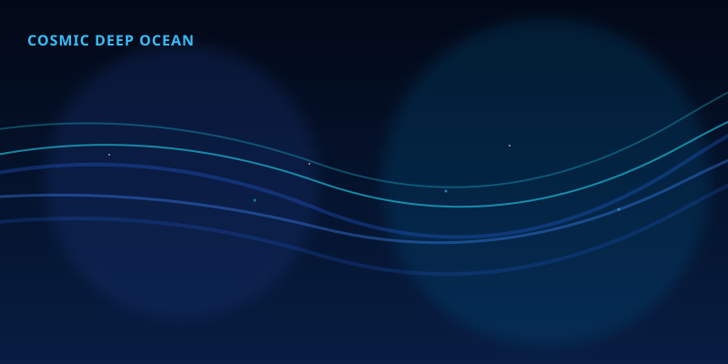
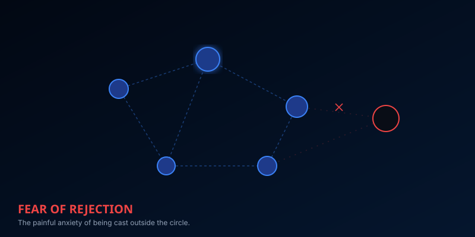
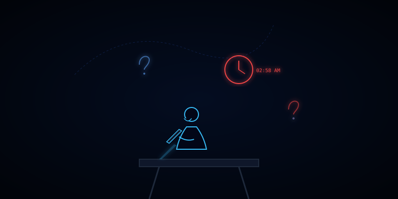

SAO HẢI VƯƠNG
"..."
Bạn có đang ở tinh cầu này?

Bên Trong Tinh Cầu Bản Đồ Mờ Sương
...
Mối liên hệ Vũ trụ - Tâm lý học:
Sao Hải Vương là hành tinh nằm ở rìa xa xôi nhất thái dương hệ, nơi ngập tràn sương mù mênh mông và các cơn bão siêu thanh cuộn xoáy. Cảm giác mất phương hướng của bạn tương tự như đứng giữa làn sương mù ấy — bạn hoang mang không biết đi đâu, chọn mục tiêu nào. Đó là vì bạn đang cố gắng đi theo bản đồ ước mơ của người khác. Hãy dừng lại, cân chỉnh lại la bàn giá trị cốt lõi để tự vẽ con đường của mình.
Khảo sát về sự vô định và lạc lối

Sự hoang mang định hướng nghề nghiệp
Dòng suy nghĩ lơ lửng
@phi_hanh_gia_111
"Tôi đang đi theo định hướng của bố mẹ, nhưng trong lòng luôn thấy cuộc sống này vô nghĩa."
@phi_hanh_gia_888
"Tôi đổi hướng liên tục, bắt đầu rất nhiều dự án nhưng không thể kết thúc nổi một việc."
@phi_hanh_gia_222
"Tôi hoang mang kinh khủng khi nhìn về tương lai 5 năm nữa. Tôi thực sự muốn làm gì?"

Gốc rễ sự lạc lối vô định
Hệ quả từ bão vô định che phủ

Xác định hệ giá trị cốt lõi để làm hoa tiêu

Cơn bão Great Dark Spot

Xây dựng lại bản đồ hành trình cá nhân
La Bàn Giá Trị Cốt Lõi
Chọn tối đa 3 giá trị sống cốt lõi để xoay kim la bàn định hướng bản thân:
